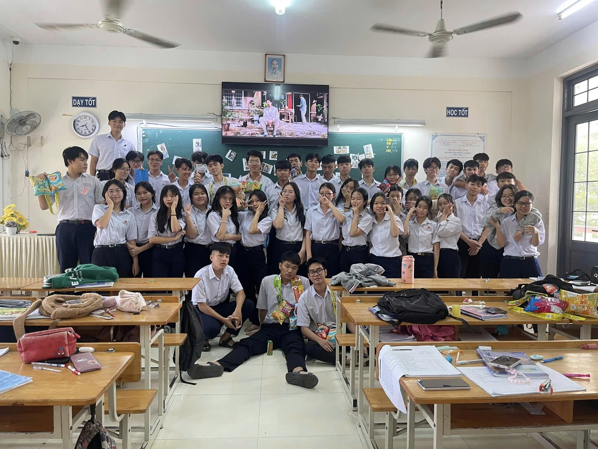

Thời gian cứ thế lặng lẽ trôi qua, để rồi khi ngoảnh lại, chúng ta – những học sinh lớp 12 – nhận ra mình đã đi đến những ngày cuối cùng của quãng đời học sinh. Mười hai năm đèn sách là mười hai năm của những kỷ niệm, của bao nỗ lực, cố gắng và trưởng thành.
Cuốn kỷ yếu này được tạo ra như một món quà lưu giữ thanh xuân – nơi hội tụ những khoảnh khắc đẹp nhất của tuổi học trò, những dòng lưu bút chứa chan tình cảm, những hình ảnh đáng nhớ của một thời áo trắng hồn nhiên, trong sáng. Đây không chỉ là nơi ghi lại dấu ấn của một tập thể lớp, mà còn là chiếc cầu nối giữa quá khứ và tương lai, để mỗi khi giở lại, chúng ta có thể mỉm cười khi nhớ về những ngày tháng cũ.
Xin chân thành cảm ơn thầy cô – những người lái đò thầm lặng đã dìu dắt chúng em trên hành trình tri thức. Cảm ơn cha mẹ – những người luôn là điểm tựa vững chắc. Và cảm ơn tất cả những người bạn thân thương – những người đã đồng hành, sẻ chia bao buồn vui suốt thời gian qua.
Mong rằng, dù mai này mỗi người một hướng đi, cuốn kỷ yếu này sẽ luôn nhắc nhở chúng ta về một thời thanh xuân rực rỡ – thời học trò không thể nào quên.
Thân ái,
Tập thể lớp 12A4
Niên khóa 2022 – 2025
